每天高频班次的 AI 领域要闻速览：发生了什么，为什么重要。
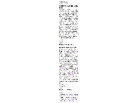
缩略图加载失败，点此查看海报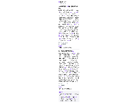
缩略图加载失败，点此查看海报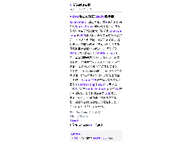
缩略图加载失败，点此查看海报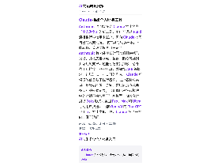
缩略图加载失败，点此查看海报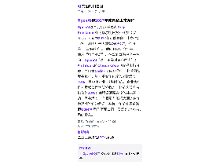
缩略图加载失败，点此查看海报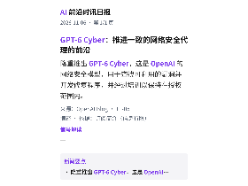
缩略图加载失败，点此查看海报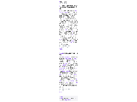
缩略图加载失败，点此查看海报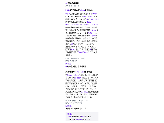
缩略图加载失败，点此查看海报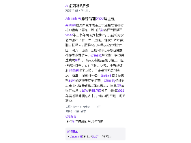
缩略图加载失败，点此查看海报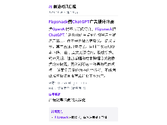
缩略图加载失败，点此查看海报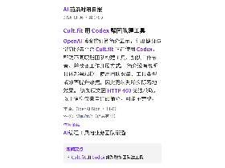
缩略图加载失败，点此查看海报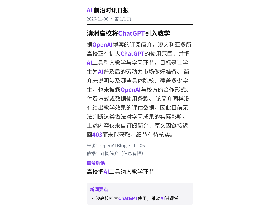
缩略图加载失败，点此查看海报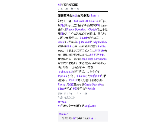
缩略图加载失败，点此查看海报知情人士称，Palo Alto Networks正洽谈以5亿美元现金加里程碑付款收购AI代理安全公司Clutch Security；Clutch专注于管理AI代理对企业系统的访问权限，双方均未回应置评请求。 Clutch成立约三年，2025年1月完成Lightspeed与SignalFire领投的2000万美元A轮融资时估值8500万美元，目前年度经常性收入接近1000万美元，按此计算交易估值约为ARR的50倍。 若交易完成，这将是Palo Alto Networks今年第七笔收购，延续其通过并购补强技术的策略。 该高溢价并非孤例：TechCrunch此前报道，云安全公司Upwind拒绝了DataDog约40倍ARR的收购报价。 Clutch的同行也相继被收购，Cyera以10亿美元收购Oasis Security，Cisco则以约4亿美元收购Astrix。
依据：可提取原文正文 · 可提取正文；不含交互图表、图片或付费隐藏内容
TechCrunch AI14:28原文链接 ↗
Airbnb在周四发布的第三季度股东信和财报电话会上宣布，其自研AI旅行代理将于2027年上半年向消费者推出，此前公司仅表示会在“下一年”上线。 该代理不是纯聊天机器人，而是按用户需求实时组合地图、照片、比价、日历和行程等数百种旅行专用界面组件，Chesky称体验“有点像生成式UI”。 公司称其覆盖预订前后，包括修改订单、支付问题、退款、重新预订和24小时安全支持，且未来将扩展到房源、酒店、服务和体验。 Airbnb援引数据称80%旅客享受研究行程，Chesky据此认为通用代理未必适合旅行规划。 同期Q3营收同比增长19%至48.7亿美元，并将2026年营收增速预期从十几%区间的中段上调至高位。
依据：可提取原文正文 · 可提取正文；不含交互图表、图片或付费隐藏内容
TechCrunch AI06:40原文链接 ↗
OpenAI 博客的订阅简介显示，印度健身与健康服务平台 Cult.fit 正在使用 Codex，帮助不同职能团队构建工具、加快工作节奏，并改变工作开展方式。 简介没有说明具体部署规模、使用团队数量、工具类型或效率提升数据，因此无法判断实际落地效果。 该条原文因 HTTP 403 无法获取，以上信息仅来自订阅简介，可能不完整。
依据：订阅简介（原文未读取） · 原文不可用：原文HTTP 403；仅依据订阅简介，信息可能不完整
OpenAI Blog04:00原文链接 ↗
Meta于周四宣布，其消费级AI助手Muse的语音与视频通话功能Muse Voice已向美国所有用户开放。 该功能在9月的Connect开发者大会上首次亮相，由Muse Realtime Avatar与Muse Realtime Voice两项新模型驱动数字人形象与用户实时对话。 与其他竞品的语音通话不同，Muse提供可自定义的动画形象（昵称Jolly），用户可改成人物、动物或其他角色；Meta称形象说话时会配合与对话语气相符的细微表情和手势。 公司认为这种拟人化能增强用户与AI助手的连接感，但目前未公布使用数据或效果评估。 该功能已在移动端、网页和Mac上线，后续将扩展到AI眼镜与年底前推出的“Muse Charm”类拓麻歌子硬件。
依据：可提取原文正文 · 可提取正文；不含交互图表、图片或付费隐藏内容
TechCrunch AI03:48原文链接 ↗
据Hugging Face博客的订阅信息，英伟达发布新一代Cosmos 3开源模型，定位为交互式世界模拟。 由于原文正文不可用，目前仅有标题与订阅简介可供核对，模型参数量、开源许可、训练数据、评测基准与具体发布时间等关键信息均无法确认，也无法判断其与上一代Cosmos模型的性能差异。 本条仅记录该发布动作，具体能力边界需以官方技术博客或模型卡为准。
依据：订阅简介（原文未读取） · 原文不可用：缺少可信单篇文章元数据或标题，未把列表当正文；仅依据订阅简介，信息可能不完整
Hugging Face Blog03:35原文链接 ↗
Meta总裁迪娜·鲍威尔·麦考密克(Dina Powell McCormick)表示，民主党在中期选举中获胜将使公司建设数据中心变得更加困难，并补充说该行业“没有做得像我们需要的那样好来解释这些投资的好处。 ” 这位 Meta 高管在周三的《华尔街日报》科技会议上发表讲话时指出，对数据中心的强烈反对——这在这个选举季的投票中非常重要——也与人们对人工智能技术的整体感受有关。 “人工智能的可见表现是数据中心，人们可以说，‘我不希望这个出现在我的社区中，’”她解释道。 这位高管还赞扬了 Meta 在构建数据中心方面的经验，称该公司已经这样做了 20 年，因为提供社交网络领域的产品需要大量的计算能力。 她说，如今，该公司在 23 个州设有数据中心，其中 5 个（包括德克萨斯州的一个）计划建设为 1 吉瓦或以上的项目。 Meta 将希望寄托在其人工智能投资上，尤其是其消费者人工智能代理 Muse，其用户规模远远超过目前的 1000 万，成为一家服务于数十亿人的企业。
依据：可提取原文正文 · 可提取正文；不含交互图表、图片或付费隐藏内容
TechCrunch AI03:12原文链接 ↗原文/简介摘译（非模型综合）
初创公司 Charge Robotics 的首席技术官兼联合创始人 Max Justicz 使用 OpenAI 模型发现了一个严重漏洞，如果被利用，黑客可能会控制运行 Ubuntu（一种广泛使用的基于 Linux 的开源操作系统）的服务器。 Justicz 对网络安全有兴趣，之前在同一代码库中发现了一个漏洞，他告诉 TechCrunch，他使用 7 月份发布的 GPT 5.6 Sol 发现了这个问题，通过人工智能制造商的 Daybreak Blue 程序，该程序使网络安全防御者能够访问强大的前沿模型。 Justicz 说：“我实际上只是将 ChatGPT 瞄准了相同的代码主体，并说‘我发现了这个错误，该错误几年前就被修复了，请找出错误或更严重的错误’，然后它在 2 小时内就回来了。 ”除了 Daybreak 的模型访问之外，OpenAI 还宣布了一项 10 亿美元的计划，以支持该计划中从事电网或供水系统等关键基础设施工作的网络安全专业人员。
依据：可提取原文正文 · 可提取正文；不含交互图表、图片或付费隐藏内容
TechCrunch AI03:06原文链接 ↗原文/简介摘译（非模型综合）
OpenAI联合创始人兼总裁Greg Brockman在《华尔街日报》科技会议上表示，公司到2027年可能具备上市条件；当被问及明年是否准备好IPO时，他回答“我想是的”。 他回顾称，今年一、二季度“相当艰难”，在智能体编程这一方向上OpenAI“甚至不在讨论范围内”：Anthropic的Claude Code已取得市场份额，而自家Codex少有人提及。 此后团队埋头执行，第三季度年化收入环比增长70%，其中企业业务规模翻倍。 企业客户目前贡献公司大部分收入，此前这部分占比仅约30%；他强调消费端收入并未萎缩，仍在增长。 他提到与摩根大通的合作为近期签约的例证，并称一年前外界普遍把OpenAI看作消费公司，质疑其对企业市场的投入。
依据：可提取原文正文 · 可提取正文；不含交互图表、图片或付费隐藏内容
TechCrunch AI02:02原文链接 ↗
Anthropic 周四宣布为 Claude 推出名为「个人财务」的新工具，用户可通过 Plaid 连接银行与信用卡账户，再向 Claude 提问自己的收支情况。 该工具为只读权限，不能转移、管理或投资用户资金。 Anthropic 称它能用日常语言解释余额与交易，并按房租水电、餐饮、购物等类别汇总月度支出，还能标记重复扣款、意外费用和持续上涨的账单，并解释 APR 等概念、计算过去一年支付的利息。 Claude 可读取的信息限于银行名称、账户名称与类型、账号后四位、余额、信用额度以及最多两年的交易记录；公司称用户在该模块中的对话不会被用于训练模型。 该功能本周以 Beta 形式向美国 Pro、Max 和 Ultra 订阅用户推送。 此前 OpenAI 的 ChatGPT 已于 5 月推出类似工具，Claude 在这一方向上属于追赶。
依据：可提取原文正文 · 可提取正文；不含交互图表、图片或付费隐藏内容
TechCrunch AI02:00原文链接 ↗
据OpenAI博客的订阅简介，澳大利亚多所高校正在扩大ChatGPT的使用范围，并把AI工具引入教学与学习环节，目标是让学生为AI普及后的劳动力市场做好准备。 简介未说明涉及哪些具体院校、覆盖多少学生，也未披露OpenAI与校方的合作形式、付费方式或数据使用条款。 该简介同样没有给出教学效果的评估数据，因此目前无法判断这类做法对学习成果的实际影响。 上述内容仅来自订阅简介，原文因链接返回403而未能获取，细节有待核实。
依据：订阅简介（原文未读取） · 原文不可用：原文HTTP 403；仅依据订阅简介，信息可能不完整
OpenAI Blog01:00原文链接 ↗
Axiom Math于周三宣布，其AI智能体已完成对Stacks Project的形式化验证。 该数学资料库由哥伦比亚大学数学家Johan de Jong于2005年发起，靠数学家持续贡献扩充，内容从本科代数一直延伸到代数、几何与数论的前沿成果，被同行视为人工编写规模最大的数学文献之一。 团队把约7654页内容转写为约1600万行Lean代码，由证明助手逐行检查，并在这一体量下保持了定理与定义之间相互依赖关系的完整。 公司称这填补了形式化数学中的一大空白——代数几何此前几乎无可依托的检查基础，研究者现在可以在此基础上验证新工作。 Axiom由25岁的斯坦福数学博士辍学生Carina Hong于2025年3月创立，今年3月完成Menlo Ventures领投的2亿美元A轮融资，文章称其估值为16亿美元。 技术路径上，公司自研了擅长数学的模型，并给智能体较松散的分层结构、让它们并行运行并自行认领任务。
依据：可提取原文正文 · 可提取正文；不含交互图表、图片或付费隐藏内容
TechCrunch AI00:16原文链接 ↗
海亮科服推出e生涯服务平台，基于自研OpenSpan生涯大模型，提供AI生涯规划师咨询，覆盖高一选科、兴趣培养和升学规划，基础规划服务免费。 据公司介绍，系统会从对话中提取学生所在省份、学科表现等信息形成学生画像，识别咨询意图后分配给对应的专家智能体，并按预设规则追问家庭预算、培养目标等条件，再给出路径建议。 平台设有成长档案，孩子学业或兴趣变化后可结合此前记录重新分析、调整建议；政策信息接入考试院、高校招办等公开数据，并设有更新机制与专家审核流程。 海亮科服称，团队自建生涯规划场景评测标准，各维度按0至3分量表打分并加权，r43版本的一次内部评测覆盖89个对话，以结果得分2分为可用标准，整体可用率92.1%。 该数字为内部测试结果，实际咨询质量仍需外部验证。
依据：可提取原文正文 · 可提取正文；不含交互图表、图片或付费隐藏内容
量子位21:17原文链接 ↗
在2026世界顶尖科学家论坛第二届国际工程智能大会上，智象元一（HiDream.ai）创始人兼CEO梅涛发表演讲，提出构建“智能体化的全模态世界模型”，认为大语言、多模态和具身大模型三条技术路线长远看终将汇流。 他给出的结构分三部分：大语言模型作为智能体的决策大脑，负责理解意图与任务规划；通用全模态模型作为世界模拟器，推演行动后果；具身上下文对接真实环境、执行动作并把观测数据回传用于校准。 演讲引用OpenRouter数据称，截至今年10月中国周Token调用量达93万亿，是美国的4.16倍，连续26周居全球第一；并称模型迭代周期已从2023年的约12个月缩短到按周推进。 智象自研统一表征的Unified Transformer架构，已搭建从图像、视频到交互、具身模型的矩阵，并形成“1+1+3”商业化架构。 上述路线属演讲主张与公司规划，实际落地效果尚待验证。
依据：可提取原文正文 · 可提取正文；不含交互图表、图片或付费隐藏内容
量子位17:37原文链接 ↗
多多农研科技大赛已办到第五届，决赛要求4支队伍从零设计建造50平方米（10米×5米×4米）的植物工厂，只种国产草莓、连种6个月、全程采用国产化方案，并实现无人值守下的远程自主控制，最后比拼草莓品质与工厂的可持续性。 上海交大与产业公司组成的“莓立方”在试种中遇到徒长、熊蜂应激等问题，最终采收295颗，平均单果重超20克、最大超40克，但长周期运行中农事判断落实不畅，获得第三名。 中国农业大学硕博团队“赛博农人”用监测净二氧化碳交换量、以冷凝水计算光合与蒸腾的“与植物对话”方案，在126平方米栽培面积上，50天累计收获284.45公斤“粉玉2号”草莓，最大单果73.7克，获一等奖。 文章还提到有参赛者将13个植物工厂运至西藏亚东县，试种10余个品种，月产约6000斤。
依据：可提取原文正文 · 可提取正文；不含交互图表、图片或付费隐藏内容
量子位17:00原文链接 ↗
隆重推出 GPT-6 Cyber，这是 OpenAI 的网络安全模型，用于查找可利用的漏洞并开发修复程序，并经过培训以保持在授权范围内。
依据：订阅简介（原文未读取） · 原文不可用：原文HTTP 403；仅依据订阅简介，信息可能不完整
OpenAI Blog17:00原文链接 ↗原文/简介摘译（非模型综合）
网易有道推出互动式数学讲题Agent“欧拉讲题”，已在应用市场上线。 产品围绕三个环节：先提示思考方向，再逐步展开讲解并归纳所用方法；支持学生针对具体步骤追问，讲解顺序不完全由预设流程决定；用动态板书、图形演示和公式推导，呈现辅助线位置、函数图像与参数关系等抽象内容。 有道将其定位为专注数学教学过程的学习Agent，而非单纯提供答案的搜题工具。 技术侧，有道2023年发布“子曰”模型，2025年开源推理模型“子曰-o1”，今年升级“子曰4”多模态模型，称提升了复杂视觉数理问题的处理能力；官方还称2025年2月首代AI答疑笔上市后一度售罄，中学理科题占答疑请求的六成。 本文由网易有道提供、量子位获授权转载，产品实际讲题效果尚无第三方评测数据。
依据：可提取原文正文 · 可提取正文；不含交互图表、图片或付费隐藏内容
量子位16:48原文链接 ↗
据 OpenAI 博客的订阅简介，Merge 借助 GPT-6 Astra、ChatGPT 与 Codex 等 OpenAI 技术，用于审查产品代码并支持市场推广工作。 其团队还把 AI 用于筹划高管晚宴、准备销售更新等业务事务。 以上信息仅来自简介，原文页面返回 403 无法获取，因此缺少具体使用规模、效果数据与部署方式等细节。
依据：订阅简介（原文未读取） · 原文不可用：原文HTTP 403；仅依据订阅简介，信息可能不完整
OpenAI Blog16:00原文链接 ↗
据OpenAI博客的订阅简介，Flipsnack把ChatGPT广告投放的重点放在引导用户试用产品上，而不是只做品牌曝光。 结果显示，其产品注册量增长，同时单次注册成本下降。 由于原文无法访问，投放预算、统计周期、注册增幅和成本降幅等关键数据均未披露，无法判断这一效果的具体规模。 该案例只能作为方向性参考，不能据此推算投资回报率或行业平均水平。
依据：订阅简介（原文未读取） · 原文不可用：原文HTTP 403；仅依据订阅简介，信息可能不完整
OpenAI Blog08:45原文链接 ↗